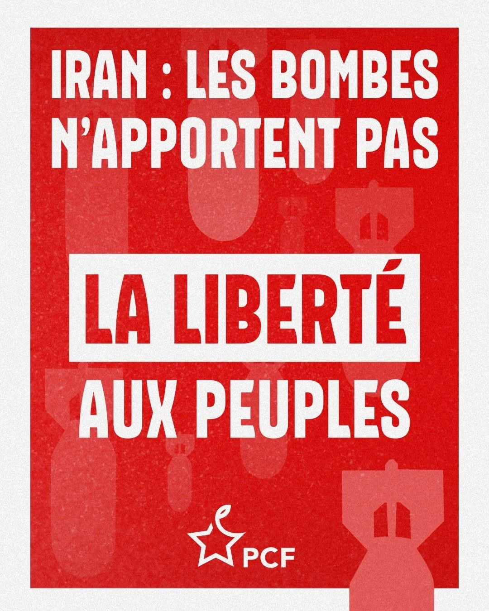

Publication relayée par le PCF 79
Le PCF condamne les bombardements contre l’Iran et appelle à un cessez-le-feu
Date de mise à jour indiquée par Facebook · 28 février 2026
Texte de la publication · PCF national et PCF Monde
Les États-Unis de Donald Trump ont lancé des frappes massives contre l’Iran, dans le sillage du gouvernement Netanyahou. Plusieurs villes ont été touchées, Téhéran riposte par des missiles.
Cette nouvelle guerre, déclenchée malgré des négociations en cours, viole le droit international.
La fuite en avant guerrière de Trump et Netanyahou fait peser un danger majeur sur toute la région. Leur logique de force, conjuguée à la répression de la dictature iranienne, condamne avant tout le peuple iranien et ouvre la voie à une escalade incontrôlable, aux conséquences mondiales.
Le PCF condamne ces bombardements illégaux, exprime sa solidarité avec les forces progressistes iraniennes dont nos partenaires du parti Toudeh et appelle la France à agir pour un cessez-le-feu et la reprise des négociations sous l’égide de l’ONU.
🔴 Retrouvez le communiqué complet en commentaires.

Sources
PCF national et PCF Monde · publication relayée par le PCF 79 · bibliothèque Facebook · AR-0002-FB-00852
À lire aussi · Iran. Les députés communistes appellent à un cessez-le-feu